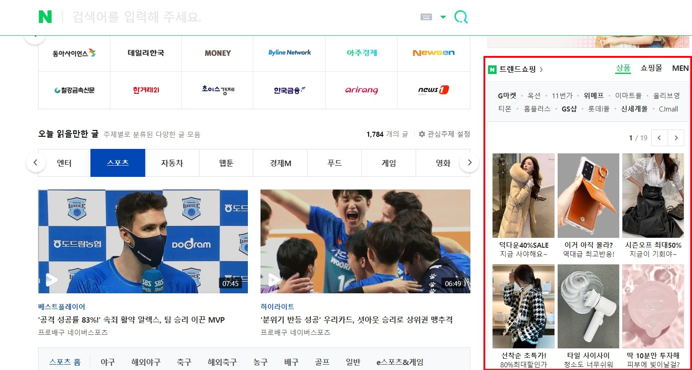
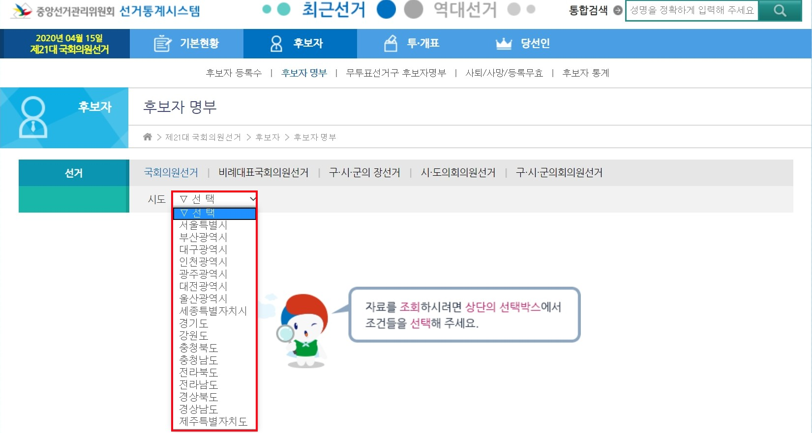

Selenium
Table of contents
*Selenium: 웹 브라우저를 자동화하는 도구. 웹 자동 테스트, 데이터 수집 등에 사용
Selenium 기초
*Selenium 사용을 위한 준비 사항:
- pip이나 conda를 활용해서 install해줘야 한다
- driver를 다운받아야 함 (크롬드라이버 다운)
driver 실행 및 종료
- driver 실행
- 아래 코드대로 실행하면, chromedriver가 켜진다
from selenium import webdriver # import해줘야 사용 가능 driver = webdriver.Chrome('driver/chromedriver.exe') ## driver 경로 적어주기 # driver가 같은 파일에 있으면 그냥 이렇게만 써도 된다: `driver = webdriver.Chrome()` - URL 접속하기
driver.get('https://chaelist.github.io/') # chromedriver가 해당 url에 접속된다 - driver 종료
- driver로 필요한 작업을 모두 수행한 후에는 종료하는 것이 좋다
driver.quit() ## 창이 하나만 열려 있다면 `driver.close()`이라고 해도 됨
웹브라우저 제어하기
- 현재 url 가져오기
driver.current_url - 뒤로가기(이전 페이지로 이동)
driver.back() - 앞으로가기(이후 페이지로 이동)
driver.forward() - 새로고침하기
driver.refresh()
find_element(s)
- find_element 계열은 첫번째로 찾아지는 요소 하나만을 반환
- find_elements 계열은 list 형태로 찾아지는 모든 요소를 반환
- find_element(s)_by_css_selector
element = driver.find_element_by_css_selector('summary.fs-5') # <summary class="fs-5"> 태그- element를 받아와서 클릭하거나, 값을 입력하거나, 필요한 text를 추출하면 된다
element.text ## .text를 해주면 해당 element에 들어있는 text를 추출할 수 있음'Python 기초' - cf)
element.get_attribute('innerHTML')도element.text와 같이 안에 있는 text를 추출 - cf)
element.get_attribute('outerHTML'): 태그와 text를 모두 보여줌element.get_attribute('outerHTML')'<summary class="fs-5 fw-500"> Python 기초 </summary>'
+) 일치하는 모든 요소를 list로 받아오기
element_list = driver.find_elements_by_css_selector('summary.fs-5') [element.text for element in element_list] # list의 각 요소에 접근해 text를 추출['Python 기초', 'Data Handling', 'Numpy', 'Pandas', '데이터 시각화', 'Web Scraping'] - element를 받아와서 클릭하거나, 값을 입력하거나, 필요한 text를 추출하면 된다
- find_element(s)_by_tag_name
element = driver.find_element_by_tag_name('footer') # <footer> 태그 - find_element(s)_by_class_name
element = driver.find_element_by_class_name('main') # <div class="main"> 태그 - find_element_by_id
- id는 늘 하나뿐이기에, find_element_by_id는 존재하지 않는다
element = driver.find_element_by_id('contents') # <h1 id="contents"> 태그 - find_element(s)_by_xpath
- xpath(XML Path Language)를 통해 특정 element를 접근할 수 있다
- 개발자 모드(ctrl+shift+i)에서 특정 태그의 xpath를 쉽게 복사 가능.
- 보통, 복사해 온 xpath를 “"”xpath””” 이렇게 적어준다 (흔히 xpath 안에 따옴표가 들어가기에, “”” 안에 넣어주는 것)
element = driver.find_element_by_xpath("""//*[@id="main-content"]/footer/p""")
click()
- element.click(): 해당 element를 클릭하는 효과
# naver.com에서 [NAVER 로그인] 버튼 누르기
driver = webdriver.Chrome('driver/chromedriver.exe')
driver.get('https://www.naver.com/')
driver.find_element_by_css_selector("a.link_login").click()
send_keys()
- element.send_keys(): 해당 element에 값을 입력하는 효과
# (위 코드에서 연결) ID를 입력하는 부분을 찾아서, 'Your ID'라는 값을 입력하기
driver.find_element_by_css_selector("#id").send_keys('Your ID')
→ 네이버 로그인 자동화 코드 FULL
driver = webdriver.Chrome('driver/chromedriver.exe')
driver.get('https://www.naver.com/')
driver.find_element_by_css_selector("a.link_login").click() # [NAVER 로그인] 링크 누르기
driver.find_element_by_css_selector("#id").send_keys('Your ID') # ID를 입력
driver.find_element_by_css_selector("#pw").send_keys('Your Password') # Password를 입력
driver.find_element_by_id("log.login").click() # [로그인] 버튼 누르기
Selenium 추가 기능들
로딩 대기 (Wait)
Selenium은 웹과 직접 상호작용하기 때문에, 웹의 요소들이 로딩될 때까지 기다리지 않으면 error가 날 때가 있다. 웹 요소들이 로딩될 때까지 기다려주는 것을 Wait이라고 한다.
- Implicit Wait
- 처음에 한 번 설정해 주면, 찾으려는 웹 요소가 없을 때마다 최대 X초를 암묵적으로 기다려 준다
- 만약 설정한 시간보다 빨리 요소가 찾아지면, 더 기다리지 않고 다음 코드로 넘어간다
- ex)
driver.implicitly_wait(3): 웹 요소가 존재할 때까지 (찾아질 때까지) 최대 3초를 기다려준다
driver = webdriver.Chrome('driver/chromedriver.exe') driver.implicitly_wait(3) # 이렇게 driver에 맨 처음 한 번만 설정해두면 된다 driver.get('https://www.naver.com/') driver.find_element_by_css_selector("a.link_login").click() # [NAVER 로그인] 버튼 누르기 - time.sleep()
- time.sleep()도 코드 진행을 멈춰서 로딩을 기다려 줄 수 있는 방법 중 하나.
-
time.sleep(3)을 코드 중간에 넣어주면, 정확히 3초간 멈췄다가 아래 코드로 넘어간다
import time # import해줘야 사용 가능 driver = webdriver.Chrome('driver/chromedriver.exe') driver.get('https://www.naver.com/') time.sleep(3) # 페이지가 로딩되길 3초 동안 기다렸다가 아래 코드로 넘어간다 driver.find_element_by_css_selector("a.link_login").click() # [NAVER 로그인] 버튼 누르기※implicitly_wait(3)은 찾고자 하는 요소가 1초만에 찾아지면 더 기다리지 않고 진행되지만, time.sleep(3)은 반드시 3초를 모두 멈췄다가 진행되기에 implictly_wait(3)이 더 효율적인 경우가 많다
- Explicit Wait
- 특정 element에 대해 어떤 상태가 될 때까지 최대 얼마나 기다려줄 것인지를 일일이 명시해주는 것.
- Implicit Wait과 Explicit Wait을 동시에 사용하는 것은 권장되지 않는다.
## 아래 3가지를 추가로 import해줘야 한다 from selenium.webdriver.common.by import By from selenium.webdriver.support.ui import WebDriverWait from selenium.webdriver.support import expected_conditions as EC driver = webdriver.Chrome('driver/chromedriver.exe') driver.get('https://chaelist.github.io/') # <summary class="fs-5"> 태그가 존재할 때까지 최대 5초를 기다려서 element를 받아온다 element = WebDriverWait(driver, 5).until(EC.presence_of_element_located((By.CSS_SELECTOR, "summary.fs-5"))) element.click() # 위에서 받아온 element를 클릭*다양한 wait조건들*
-
presence_of_element_located(): element가 존재할 때까지 기다림- 특정 값을 추출해오는 목적이라면 presence만 체크해도 괜찮다
-
visibility_of_element_located(): element가 실제로 보이는 상태가 될 때까지 기다림- element와 interact해서 반응을 체크하는 등의 목적이라면 visibility까지 체크해주는 게 좋다
-
element_to_be_clickable(): element가 클릭 가능한 상태가 될 때까지 기다림- element를 찾아서 클릭하려는 목적이라면 clickable한지 체크해주는 게 좋다
-
invisibility_of_element_located(): element가 안 보일 때까지 기다림. -
text_to_be_present_in_element(): element 안에 텍스트가 로딩될 때까지 기다림.-
text_to_be_present_in_element(locator, 확인하고자 하는 text)이렇게 두 개의 값을 넣어줘야 한다
-
→ 네이버 로그인 자동화 코드 각 줄에 Explicit Wait 사용해보기
from selenium import webdriver from selenium.webdriver.common.by import By from selenium.webdriver.support.ui import WebDriverWait from selenium.webdriver.support import expected_conditions as EC driver = webdriver.Chrome('driver/chromedriver.exe') driver.get('https://www.naver.com/') wait = WebDriverWait(driver, 3) # 아래에서 모두 같은 시간(3초)을 설정해줄 거면 이렇게 미리 저장해둬도 된다 # [NAVER 로그인] 링크가 clickable 상태가 될 때까지 최대 3초 기다려서 클릭하기 login_link = wait.until(EC.element_to_be_clickable((By.CSS_SELECTOR, 'a.link_login'))) login_link.click() # ID 입력창이 visible할 때까지 최대 3초 기다려서 ID 입력하기 id_box = wait.until(EC.visibility_of_element_located((By.CSS_SELECTOR, '#id'))) id_box.send_keys('Your ID') # ID를 입력 # Password 입력창이 visible할 때까지 최대 3초 기다려서 Password 입력하기 password_box = wait.until(EC.visibility_of_element_located((By.CSS_SELECTOR, '#pw'))) password_box.send_keys('Your Password') # [로그인] 버튼이 clickable 상태가 될 때까지 최대 3초 기다려서 클릭하기 login_button = wait.until(EC.element_to_be_clickable((By.ID, 'log.login'))) login_button.click() # [로그인] 버튼 누르기
iframe 속 요소 다루기
-
태그: HTML 문서 안에 또 다른 HTML 문서를 삽입할 때 사용하는 태그. - 흔히 광고 같은 서드파티 콘텐츠를 하나의 iframe 안에 담는다
-
iframe 태그는 실제 HTML 문서를 담고 있는 것이 아니라 HTML 문서를 참조하기 때문에, iframe 안에 있는 element가 개발자도구에서는 찾아진다 해도 Selenium으로 찾으려고 하면 실패한다
ex) naver.com의 아래 ‘트렌드쇼핑’ 영역은 하나의 iframe 안에 담겨 있다 
→
li.goods_item(광고 아이템 리스트)은 iframe 안에 들어있기에, 아래와 같이 코드를 쓰면 가져올 수 없다# 원하는 결과가 나오지 않는 코드 driver = webdriver.Chrome('driver/chromedriver.exe') driver.get('https://www.naver.com/') driver.implicitly_wait(3) element_list = driver.find_elements_by_css_selector('li.goods_item') [element.text for element in element_list][] -
iframe에 있는 코드를 접근하려면 iframe으로 이동해야 한다 –
driver.switch_to.frame()을 사용하면 프레임으로 이동하는 것이 가능*
li.goods_item(광고 아이템 리스트)가 담긴 iframe은<iframe id="shopcast_iframe">→ 해당 iframe으로 이동하려면 다음과 같은 코드 중 하나를 써주면 된다
# 1) 웹 요소 파라미터로 사용 driver.switch_to.frame(driver.find_element_by_css_selector('#shopcast_iframe') # 2) iframe의 id 또는 name 속성값 사용 driver.switch_to.frame('shopcast_iframe') # 3)iframe 인덱스 사용 driver.switch_to.frame(2) ##찾은 iframe 태그가 3번째 iframe이여서 -
최종:
#shopcast_iframeiframe으로 이동해서li.goods_itemelement에 접근, text 가져오기driver = webdriver.Chrome('driver/chromedriver.exe') driver.get('https://www.naver.com/') time.sleep(1) # 'mainFrame'으로 이동 driver.switch_to.frame('shopcast_iframe') element_list = driver.find_elements_by_css_selector('li.goods_item') [element.text for element in element_list] # 아래 text는 광고가 그때그때 달라지므로 계속 가져올때마다 바뀜.['올겨울 최강한파~\n포근하고따뜻한옷', '살균수가대신해요\n변기살균청소까지', '서둘러요~최대80%\n고민하면 놓쳐요!', '이렇게 쉬워도돼?\n완전~중독됐어!', '이렇게 맛있는데\n왜너만몰라?', '최대 50% SALE\n시즌오프 진행중!', '북극발한파 추위~\nBEST롱패딩64%↓', '미려한 디자인~\n한눈에 반했어!', '자신있는 퀄리티\n귀걸이 당일발송', '운동복 일상복OK\n겨울초특가세일', '비싸게사지마~\n퀄리티 비교불가!', 'KF94 100장쟁여\n장당200원대 특가', '그윽한 분위기 아이팔레트', '목욕탕대신 이거! 지금3+1']
+) Nested iframes
- ‘A’ iframe 안에 ‘B’ iframe이 들어있다면, 메인 페이지에서 바로 B로 들어갈 수는 없다. 아래와 같이 순서대로 switch해줘야 함.
driver.get('URL')
driver.switch_to.frame('A')
driver.switch_to.frame('B')
+) iframe에서 밖으로 / 상위 iframe으로 나오기
# 상위 iframe으로 이동
driver.switch_to.parent_frame()
# 웹 페이지 / 최상위 프레임 / 메인 프레임으로 이동
driver.switch_to.default_content()
Select 요소 다루기
*Select요소: 드롭다운 메뉴에서 여러 옵션 중 하나를 선택하는 형태의 웹 요소 (아래 예시) 
- Select 요소는 select 태그로 돼있고, 안에 있는 옵션들은 option 태그로 되어 있다.
- select 태그 예시:
<select id='cityCode' name='cityCode' tabindex="3"> - option 태그 예시:
<option value="1100" >서울특별시</option>
- select 태그 예시:
*Select 요소는 각 element를 찾아서 클릭하는 방식으로 다뤄도 되지만, 아래와 같이 Selenium의 ‘Select’를 사용하면 훨씬 간단하게 다룰 수 있다.
from selenium.webdriver.support.ui import Select # Select 툴을 import해준다
driver = webdriver.Chrome('driver/chromedriver.exe')
driver.get('http://info.nec.go.kr/main/showDocument.xhtml?electionId=0020200415&topMenuId=CP&secondMenuId=CPRI03')
driver.implicitly_wait(3)
# '국회의원선거'탭 클릭
driver.find_element_by_css_selector('#electionId2').click()
# select 웹 요소를 찾아서 Select 안에 넣어 준다
cityCode_select = Select(driver.find_element_by_css_selector('#cityCode')) # <select id='cityCode'> 태그
# '서울특별시' option 선택
cityCode_select.select_by_visible_text('서울특별시')
cf) Select 요소에서 option을 선택하는 다양한 방법
# 1) 옵션 이름으로 선택 (웹사이트에서 보이는 옵션 이름)
cityCode_select.select_by_visible_text('서울특별시')
# 2) 옵션의 value로 선택 ('서울특별시' 옵션의 value는 1100)
cityCode_select.select_by_value('1100')
# 3) 옵션의 인덱스로 선택 ('서울특별시'는 두 번째 옵션)
cityCode_select.select_by_index(1)
Scroll Down (Keys 활용)
scroll down해줘야만 아래에 있는 element가 로딩되는 경우가 많다.
- 100번 scroll down하기
from selenium.webdriver.common.keys import Keys ## Keys를 import해준다 body = driver.find_element_by_tag_name("body") # <body> element 저장해두기 pagedowns = 1 while pagedowns < 100: body.send_keys(Keys.PAGE_DOWN) #scroll down ### ---작업--- ### pagedowns += 1 driver.quit() - 특정 조건이 만족될 때까지 scroll down
#--예시1---------------------------------------------- body = driver.find_element_by_tag_name("body") month = 0 while int(month) < 10: ## 1월~9월까지만 데이터를 가져오려는 경우 body.send_keys(Keys.PAGE_DOWN) #scroll down ### ---작업--- ### #--예시2---------------------------------------------- body = driver.find_element_by_tag_name("body") app_list = [] while '애니팡' not in app_list: ## '애니팡' 데이터가 수집될 때까지 scroll down body.send_keys(Keys.PAGE_DOWN) #scroll down ### ---작업--- ###
Headless 모드로 이용
*Headless 모드: 웹 브라우저가 눈에 보이지 않는 상태로, 백그라운드에서 실행되는 모드
- Headless 모드를 사용하면 컴퓨터의 자원(CPU, RAM 등)이 덜 소모되고, 더 빠르게 동작한다
from selenium.webdriver.chrome.options import Options # Options를 별도로 import
options = Options()
options.add_argument("--headless") ## headless 모드로 설정
options.add_argument("window-size=1920,1080") ## 브라우저 창 크기 설정(1920x1080) - 너무 크기가 작으면 로딩이 잘 안될 수 있다
driver = webdriver.Chrome('driver/chromedriver.exe', options=options)
## -- 작업 -- ##
window(창) 제어
창 크기 조절 및 스크린샷
- 풀스크린으로 보기
driver.fullscreen_window() - 창 크기 최대화(□)
driver.maximize_window() - 창 크기 최소화(-)
driver.minimize_window() - 창 코기 조절
driver.set_window_size(800, 600) # 창 크기 (800, 600)으로 설정 - 스크린샷 저장
driver.get_screenshot_as_file('image.png') # image.png라는 파일에 스크린샷 저장 ## driver.save_screenshot('image.png)라고 해도 동일한 효과+) 특정 부분만 캡처하기
# 예시: naver.com 메인 배너 광고 부분만 캡처하기 driver = webdriver.Chrome('driver/chromedriver.exe') driver.get('https://www.naver.com/') element = driver.find_element_by_css_selector('#veta_top') # 캡처할 element를 선택해준다 element_png = element.screenshot_as_png with open("naver_main_banner.png", "wb") as file: ## naver_main_baneer.png라는 파일에 저장 file.write(element_png) driver.quit()
웹 브라우저 창 여러 개 다루기
: 웹사이트에서 링크를 클릭하면 새로운 창에 웹사이트가 열리는 경우에 유용.
ex) 쿠팡의 경우, 상품을 클릭하면 상품의 상세 페이지가 새로운 창으로 열린다.
- 쿠팡 ‘커피’ 검색 결과 페이지 접속 → 첫번째 item 클릭
import time from selenium import webdriver driver = webdriver.Chrome('driver/chromedriver.exe') driver.implicitly_wait(3) # 쿠팡 '커피' 검색 결과 페이지 접속 driver.get('https://www.coupang.com/np/search?component=&q=%EC%BB%A4%ED%94%BC&channel=user') time.sleep(1) # 첫번째 item을 찾아서 클릭 products = driver.find_elements_by_css_selector('li.search-product') products[0].click()→ 첫 번째 아이템에 대한 상세 페이지가 새로운 탭에 열린다.
- ※ 하지만 현재 웹 브라우저에서 열린 탭과, Selenium이 포커스된 탭은 다르다
- Selenium이 포커스된 탭은, Selenium 웹 드라이버가 현재 ‘다루고 있는’ 탭으로, 직접 설정해줘야 바뀐다.
- 그렇기 때문에 아래와 같이 두번째 item을 클릭하는 코드를 써줘도 자연스럽게 실행되어 새로운 탭이 1개 더 열린다. (탭 총 3개)
products[1].click() - Selenium이 포커스된 탭 바꾸기:
driver.switch_to.window(driver.window_handles[i])# 열려 있는 탭 리스트 조회 print(driver.window_handles) # 현재 포커스된 탭 -- 아직 탭을 바꿔주지 않았기 때문에 처음 .get()으로 접속한 탭 (=첫번째 탭) print(driver.current_window_handle) # 두 번째 탭으로 바꿔주기 driver.switch_to.window(driver.window_handles[1]) # 현재 포커스된 탭 -- 이제 두번째 탭으로 바뀌었음을 확인 가능 print(driver.current_window_handle)['CDwindow-9C390D79522E1EAE4B301DD80A05D3FA', 'CDwindow-83BB35AAF356770405A2644797340DE6', 'CDwindow-E2CFF69328DFC8E29C4DF6DA6F16967F'] CDwindow-9C390D79522E1EAE4B301DD80A05D3FA CDwindow-83BB35AAF356770405A2644797340DE6 -
driver.close로 현재 포커스된 탭 닫기- 더 이상 안쓰는 탭을 계속 열어두면 자원이 소모되기에 그때그때 닫아주는 것이 좋다.
driver.close() # 탭 닫기 driver.switch_to.window(driver.window_handles[0]) # 포커스된 탭이 없어졌으므로, 다시 첫번째 탭으로 포커스를 이동시킨다